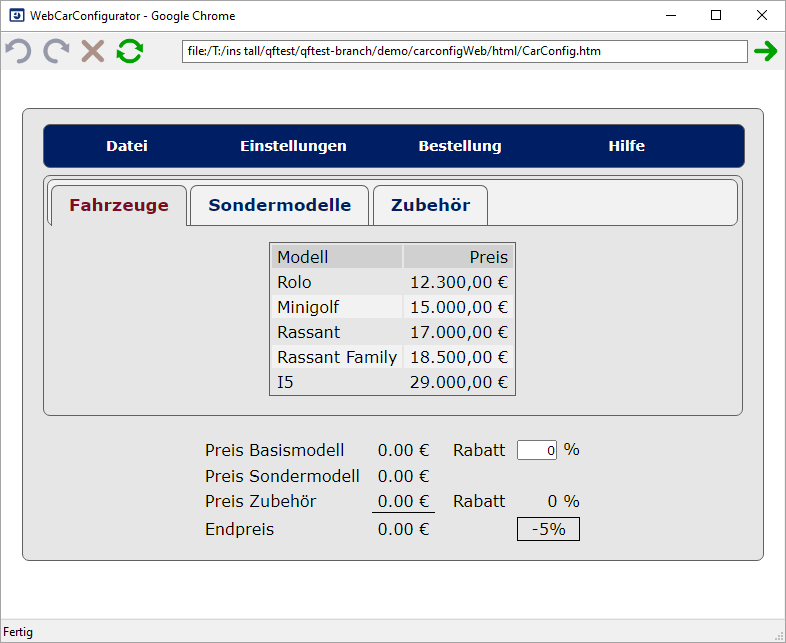

| Version 6.0.3 |
Nachdem die theoretische Beschreibung des Vorgehens nicht einfach
zu verstehen ist, zeigt dieser Abschnitt eine
Beispielimplementierung für das WebCarConfigurator Demo. Sie
finden die dazugehörige Testsuite unter
qftest-6.0.3/demo/carconfigWeb/carconfigWeb_de.qft.
|
|  | ||
|
| Abbildung 47.6: WebCarConfigurator | ||
Wie im vorigen Abschnitt besprochen, müssen wir zuerst herausfinden, welches Attribut uns die relevanten Informationen liefert, um nachher zu den generischen Klassen von QF-Test zu kommen.
class Attributs
Wie Sie in den vorigen Abschnitten gesehen haben, besteht also die erste Aufgabe eines Webprojektes, daraus, herauszufinden wie QF-Test die Komponenten der Webseite erkennt und entsprechend diese Übersetzungstabelle zu erstellen. Diese Aufgabe sieht auf den ersten Blick schwierig aus, kann Ihnen aber im späteren Verlauf Ihres Projektes viel Wartungsarbeit bei Änderungen in der Komponentenhierarchie ersparen, weil sich QF-Test eben nur mehr auf die wesentlichen Eigenschaften Ihrer HTML Seite konzentiert und nicht mehr alle möglichen Informationen auswertet.
Im Kapitel 57 finden Sie eine vollständige Aufführung aller generischen Klassen für Komponenten oder komplexe Komponenten wie Listen oder Bäume. Hier sollten Sie natürlich nicht alles mögliche versuchen zu mappen, sondern eher bedarfsorientiert vorgehen. Sie sollten also nur Komponenten, die auch wirklich benötigt werden, versuchen für QF-Test zu übersetzen. Eine spätere Erweiterung des Aufrufes ist möglich, falls neue Komponenten dazu gekommen sind.
Im vorherigen Beispiel würde man nun die nächsten Komponenten wie Menüs oder Tabs analysieren.
Nachdem dies den
Rahmen dieses Handbuchs sprengen würde, finden Sie ein
Beispiel für eine vollständige Parametrisierung des Prozeduraufrufs in unserer Demo Testsuite
qftest-6.0.3/demo/carconfigWeb/carconfigWeb_de.qft
in der Prozedur startStop.start in der Sequenz CustomWebResolver installieren.
Damit Ihre Übersetzungen zukünftig bei jedem Start der Webanwendung verwendet werden, sollten Sie
den Prozeduraufruf von qfs.web.ajax.installCustomWebResolver direkt nachdem
der Browser geöffnet wurde ausführen.
Wenn Sie den Start Ihrer Browser-Anwendung über den QF-Test Schnellstartassistenen erstellt haben,
finden Sie in der erzeugten Vorbereitungssequenz bereits den Prozeduraufruf in der
Sequenz CustomWebResolver installieren. Dieser kann dann entsprechend parametrisiert werden.
Neben der reinen Übersetzung der Webseite nach QF-Test ist es auch möglich, bestimmte Komponenten für die
Aufzeichnung zu ignorieren.
Hierfür sind die Parameter ignoreTags bzw. ignoreByAttributes zuständig. Dieses
Ignorieren sollten Sie aber erst einführen, wenn Sie die meisten Komponenten bereits übersetzt haben.
Abschließend möchten wir Ihnen die Unterschiede zwischen der ursprünglichen Aufnahme und so wie der Aufzeichnungen mit CustomWebResolver zeigen. In der nachfolgenden Tabelle finden Sie wieder links die Aufzeichnungen ohne CustomWebResolver und rechts finden Sie die selben Aufzeichnungen mit CustomWebResolver.
|
|
|
||||||
|
| Abbildung 47.16: Verbesserte Komponentenaufzeichnung am Beispiel des WebCarConfigurators | ||||||
| Letzte Änderung: 6.9.2022 Copyright © 1999-2022 Quality First Software GmbH |